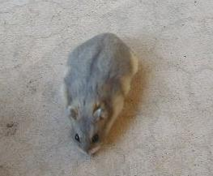
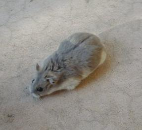
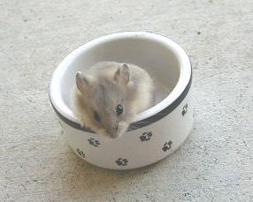

| Opal Campbells Dwarf Hamsters | ||||||||||||||
|  | ||||||||||||||
|  | ||||||||||||||
| Pregnant Opal Dwarf | ||||||||||||||
|  | ||||||||||||||
| The opal gene (dd) is a recessive gene. Being recessive means that a hamster needs two of these genes (one from each parent) to have the opal coloration. The opal gene can be carried recessively and not show up in the coat at all. Breeding to an opal or to another hamster carrying the opal gene, though, will produce some opal babies. | ||||||||||||||